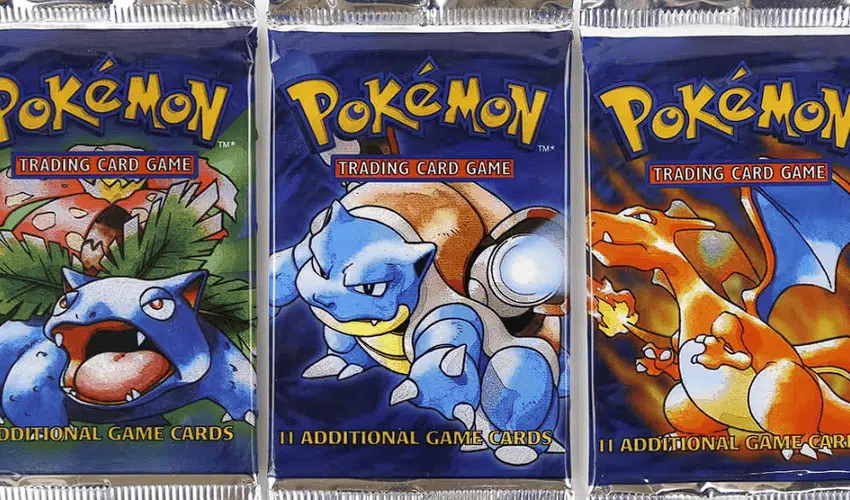
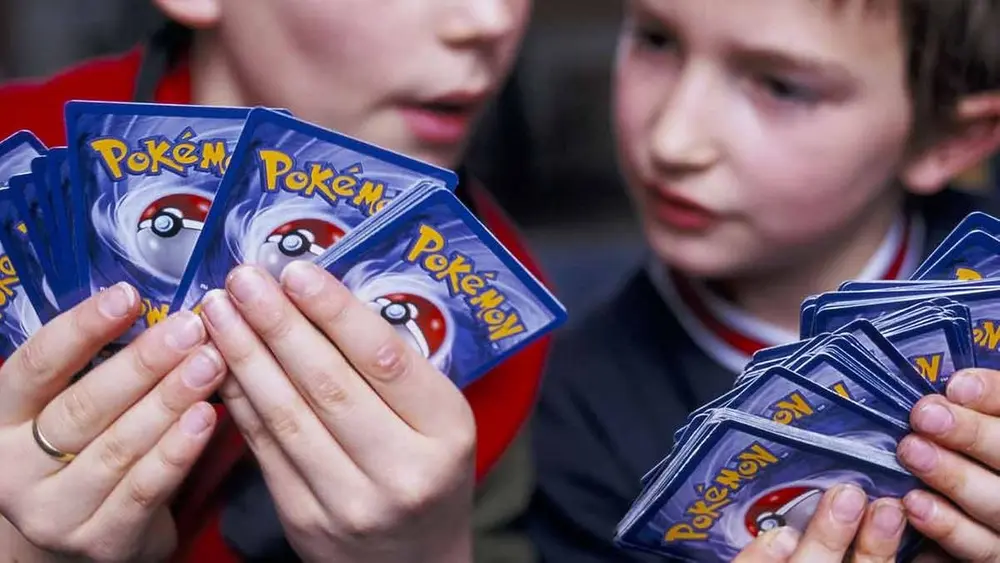
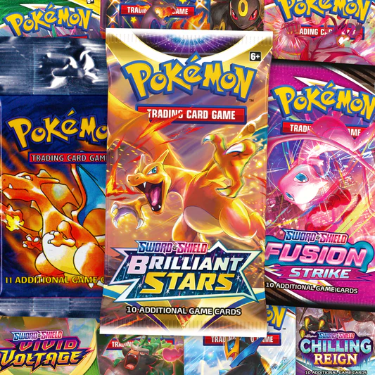

Timeline of Pokémon

1996 - The Beginning
Pokémon was first released in Japan with Pokémon Red and Green for the Game Boy, launching a global phenomenon.

1999 - Pokémon TCG Launch
The Pokémon Trading Card Game officially launched in the U.S., quickly becoming a top collectible and game worldwide.

2000s - Global Expansion
With new generations of games and cards, Pokémon solidified its place as one of the most iconic franchises in pop culture.

Today
Pokémon continues to thrive through digital games, online play, streaming series, and a strong TCG community.